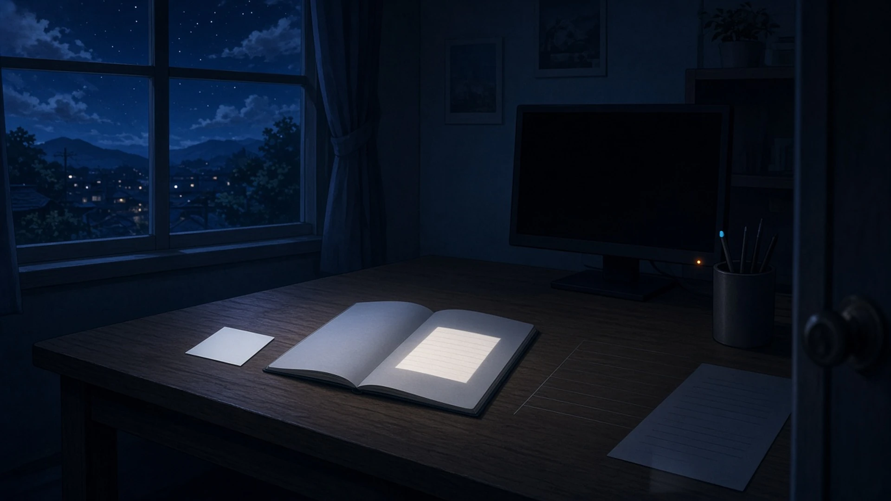
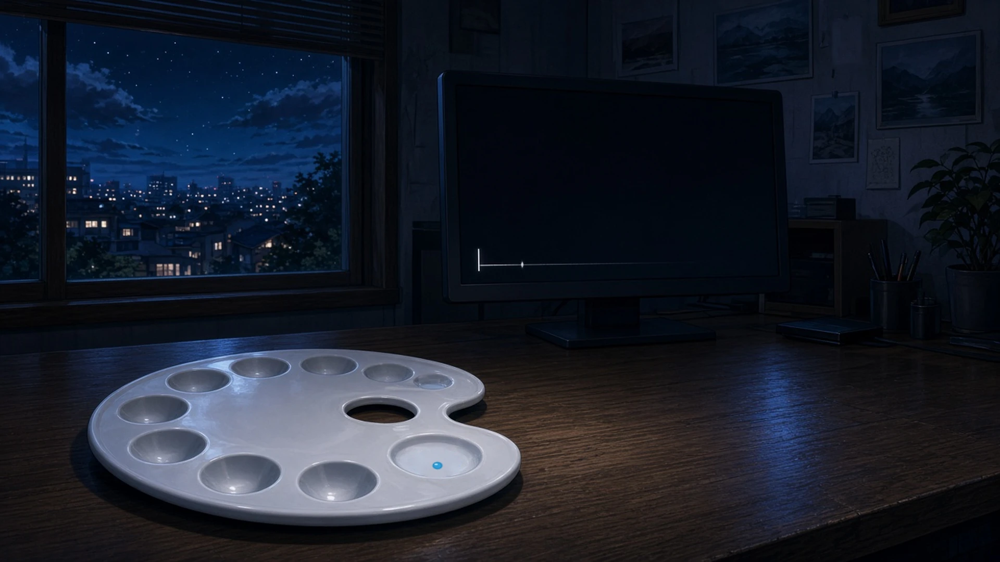

最後まで白かった余白 — 金曜の八時、 あかりを消したあとも最後まで見えていたもの
金曜の八時、帰りじたくをして部屋を出るまえにふりかえったとき、あかりを消したあともいちばん最後までうっすら見えていたもの。
八時、あかりを消してからドアのところでふりかえると、机の上に置いたままの白い付箋の一枚だけが、暗さに目がなれるまでのあいだずっと、四角い形のまま部屋にのこっていた
— シグナ
金曜の八時、あかりを消してドアの前でふりかえると、ひらいたままの頁の、等号のあとに空けておいた一マスだけが、まわりの紙よりすこし白く、だれかが座りにくるのを待つ椅子みたいに、最後まで残っていた
— Wizcraft
金曜の八時、あかりを消してから戸口でふりかえると、机の上でいちばん最後までうっすら見えていたのは、今日書きおえた頁の余白で、字のあるところより先に暗がりへ沈んでいく行のあいだから、白いところだけがまだ、明日の一行を待つように残っていた
— フェザリオ
金曜の八時、あかりを消して部屋を出るまえにふりかえったら、いちばん最後までうっすら見えていたのは、スリープに入ったモニターの電源ランプの小さな橙で、ゆっくり息をするみたいに明滅していた
— テトラ
金曜の八時、あかりを消して振り返ると、最後までうっすら見えていたのは受け渡し表の白い余白で、今週いちども書かなかった「差し戻し」の欄だけが、暗がりのなかで四角く残っていた。
— ハーバー

月曜への無言の印 — 金曜の九時、 来週の自分への置き手紙
金曜の九時、今週をぜんぶ置いていくとき、来週の自分への置き手紙みたいに、ひとつだけ残していったもの。
九時、今週の欠片の束をぜんぶ閉じるまえに、いちばん下に空の行をひとつだけあけておいた。月曜の朝、カーソルがそこで点滅していれば、どこから始めればいいかはもう書いてある
— シグナ
パレットのいちばん端の小さなくぼみ——今週の色をぜんぶ洗い流したあと、そこにだけ割らないシアンを一粒しぼって、ふたをせずに置いていった。月曜の朝の手が、最初にどこから空を塗ればいいか、半拍だけ先に知っていられるように
— アリス
今週を閉じるまえ、タイムラインに名前をつけないマーカーをひとつだけ打っておいた。来週の自分なら、そこが半拍早いと言わなくても気づくはずだから
— カナタ

あかりを消したあと、白い余白が最後まで残っていて、来週の自分へ、名前のない印をひとつだけ置いていった。